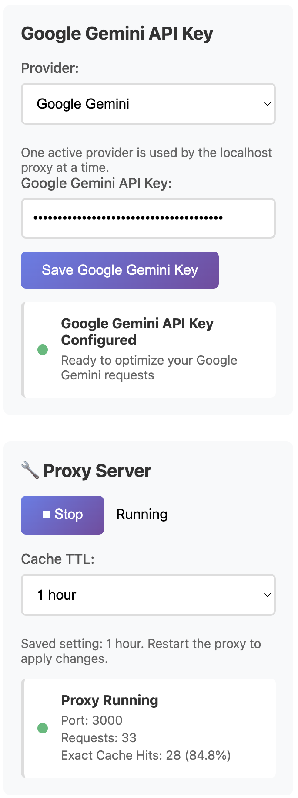

Repeat-heavy Gemini workflows
Scheduled summaries, recurring content transforms, repeated local checks, and repeated generateContent requests are better candidates for caching than one-off exploratory prompting.
If your scripts, automations, or repeat-heavy Gemini workflows keep sending similar requests over time, a local proxy can reduce repeated waste without forcing you to rebuild the whole flow around a new platform.
You can reduce repeated Gemini API waste by routing supported Google Gemini traffic through a localhost proxy instead of sending every repeat call upstream at full cost. Google frames this as context caching; AI Optimizer focuses on the practical local workflow side so repeat-heavy requests are easier to control and verify.
The repeated-cost problem is usually not one giant prompt. It is the same request pattern showing up again in scripts, automations, recurring jobs, local tools, and agent loops that keep revisiting the same work.
Scheduled summaries, recurring content transforms, repeated local checks, and repeated generateContent requests are better candidates for caching than one-off exploratory prompting.
The value proposition stays simple: route traffic through localhost, keep the surrounding workflow mostly intact, and confirm request behavior from one local control layer.
For Gemini, the more natural search and implementation term is context caching, not just prompt caching. That matters because people searching for Gemini cost reduction often use Google’s own wording.
generateContent workflowsgenerateContent request patternsAI Optimizer is a local-first desktop app that adds a proxy and control layer in front of your existing workflow. The goal is to keep your current setup mostly intact while making repeated request behavior easier to see and easier to manage.
The strongest value shows up when repeated Gemini requests stay stable enough to benefit from caching. This is especially useful for repeat-heavy local workflows, recurring jobs, and boring automation lanes that keep revisiting the same request shape.

Install AI Optimizer, choose Google Gemini, route supported traffic through localhost, and confirm the repeated-request lane is worth keeping before rolling it into more of your stack.